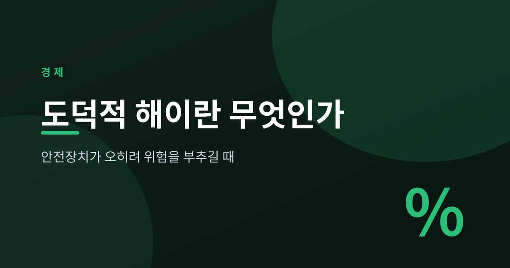
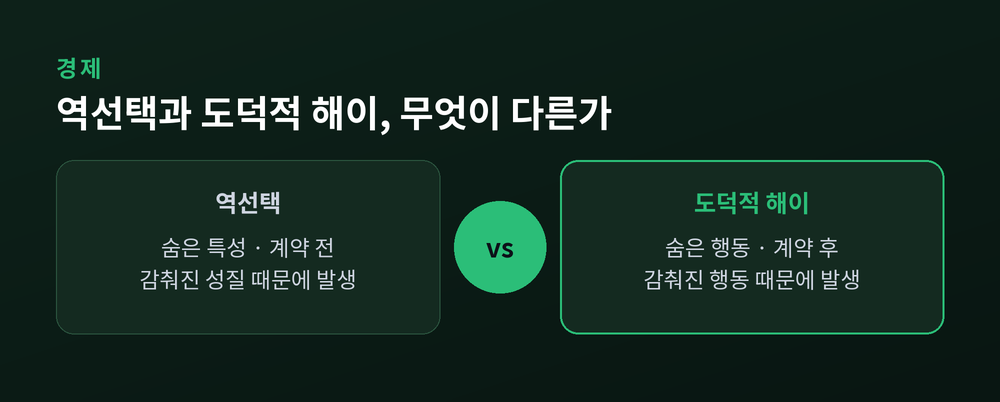
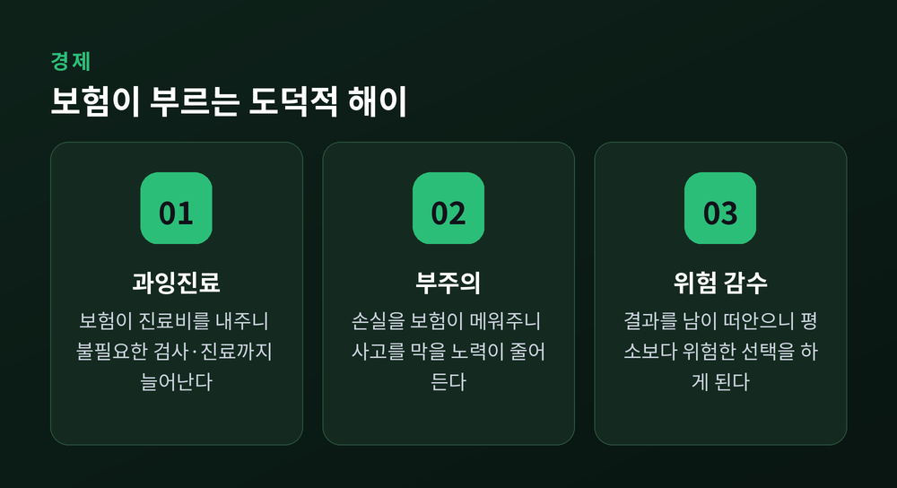
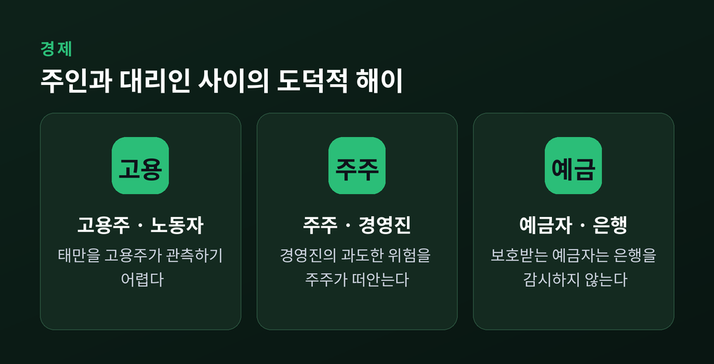
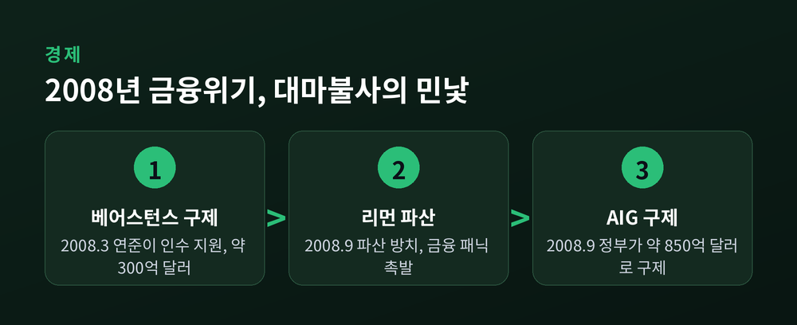
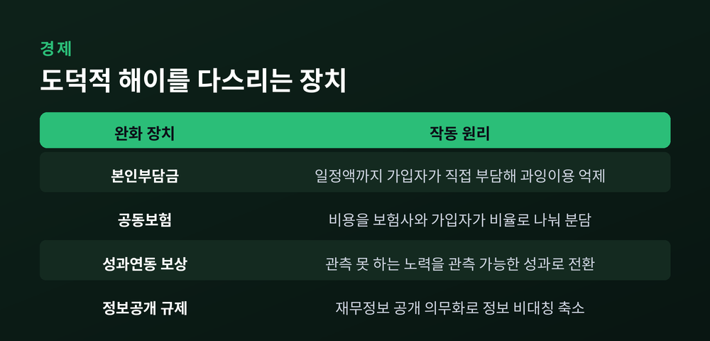

이번 글에서는 경제학의 오래된 수수께끼 하나를 정리해 보겠습니다. 위험에 대비하려고 만든 안전장치가, 어째서 사람을 더 위험하게 만드는가 하는 문제입니다. 이것을 도덕적 해이(moral hazard)라고 부릅니다. 이름과 달리 도덕과는 거의 상관이 없습니다.
정의부터 담백하게 짚겠습니다. 도덕적 해이란, 자기 행동의 결과를 남이 대신 떠안을 때 사람이나 기업이 더 위험하게 행동하게 되는 유인의 문제입니다.
"위험은 내가 감수하고, 손실은 남이 떠안는다." 이 한 문장이 도덕적 해이의 출발점입니다.
손실을 남이 메워준다면 굳이 조심할 이유가 줄어듭니다. 그래서 평소라면 하지 않았을 행동을 하게 됩니다.
여기서 오해를 하나 풀어야 합니다. '도덕적'이라는 말이 붙어 있지만, 이것은 누가 나쁜 사람이라는 뜻이 아닙니다. 이 용어를 연구한 뎀비와 보든에 따르면, 18세기 수학자들은 'moral'을 '주관적'이라는 의미로 썼습니다. 그 흔적이 지금까지 남아 오해를 부르는 셈입니다.
그러니 도덕적 해이가 나타났다면, 대리인이 부도덕한 것이 아니라 그런 유인을 남겨둔 설계자가 어리석은 것입니다. 사람을 탓할 문제가 아니라, 구조를 살펴야 할 문제입니다.
도덕적 해이는 '정보 비대칭'이라는 큰 우산 아래 있습니다. 거래하는 두 사람이 가진 정보의 양이 다를 때 생기는 문제입니다. 그런데 같은 우산 아래 자주 헷갈리는 개념이 하나 더 있습니다. 바로 역선택입니다.
둘의 차이는 무엇이 숨는가, 그리고 언제 숨는가에 있습니다.
역선택은 '숨은 특성'의 문제입니다. 계약을 맺기 전부터 이미 존재하는 정보 비대칭입니다. 예컨대 건강이 나쁜 사람일수록 종합보험에 더 적극적으로 가입합니다. 자신이 보험을 많이 쓰게 될 것을 알기 때문입니다. 보험사는 그 사실을 모릅니다.
도덕적 해이는 '숨은 행동'의 문제입니다. 계약을 맺기 전에는 정보 차이가 없다가, 계약 후에 한쪽이 보이는 행동이 새로운 정보 비대칭을 만듭니다. 보험에 가입한 뒤 부주의해지는 것이 그렇습니다.

정리하면 역선택은 계약 전, 도덕적 해이는 계약 후입니다. 역선택은 상대의 감춰진 성질이고, 도덕적 해이는 상대의 감춰진 행동입니다. 이 두 축만 기억하면 헷갈릴 일이 없습니다.
도덕적 해이라는 말은 원래 보험 업계에서 나왔습니다. 그 기원은 17세기까지 거슬러 올라가고, 19세기 후반 영국 보험회사들이 널리 썼습니다. 이유는 분명합니다. 보험이라는 제도 자체가 도덕적 해이를 부르기 때문입니다.
보험은 손실이 나면 보험사가 메워주는 구조입니다. 그러니 가입자 입장에서는 사고를 막으려는 노력의 값이 떨어집니다.
두 가지 얼굴로 나타납니다.
하나는 부주의입니다. 화재보험에 들면 화재 예방에 덜 신경 쓰고, 자동차보험에 들면 관리에 소홀해집니다. 사고를 막을 노력이 줄어듭니다.
다른 하나는 과잉진료입니다. 진료비를 보험이 대신 내주면, 꼭 필요하지 않은 검사나 진료까지 받으려는 마음이 생깁니다. 불필요한 의료 이용이 늘어납니다.

두 경우 모두 가입자가 나쁜 사람이라서 벌어지는 일이 아닙니다. 손실을 남이 진다는 구조가 그런 선택을 자연스럽게 만들 뿐입니다.
도덕적 해이가 가장 또렷하게 드러나는 자리가 '주인-대리인 문제'입니다. 한 사람(대리인)이 다른 사람(주인)을 대신해 일하는데, 대리인의 행동을 주인이 완벽히 지켜볼 수 없을 때 생깁니다.
가장 흔한 예가 일터입니다. 노동자가 열심히 일하지 않아도 고용주가 그것을 정확히 관측하기 어렵습니다. 이 감춰진 태만이 곧 숨은 행동입니다.
회사로 넓히면 더 큰 그림이 보입니다. 주주가 주인이고 경영진이 대리인입니다. 경영진이 주주의 이익이 아니라 자기 이익을 좇아 과도한 위험을 감수한다면, 그 결과는 주주가 떠안습니다.

이렇게 도덕적 해이는 보험을 넘어, 사람이 사람을 대신해 무언가를 맡는 모든 관계에 스며 있습니다.
가장 값비싼 도덕적 해이는 금융에서 터졌습니다. 열쇳말은 '대마불사(too big to fail)'입니다.
어떤 은행이 너무 커서, 망하면 경제 전체가 흔들린다고 해봅시다. 그러면 정부는 결국 그 은행을 구제할 수밖에 없습니다. 문제는 은행이 그 사실을 안다는 데 있습니다.
"어차피 구제받는다"고 믿으면 은행은 더 위험한 곳에 돈을 겁니다. 잘되면 이익은 자기 몫이고, 잘못돼도 손실은 정부가, 결국 납세자가 떠안기 때문입니다. 이익은 사유화되고 손실은 사회화됩니다.
2008년 글로벌 금융위기가 그 민낯을 드러냈습니다. 금융회사들은 높은 이자를 노려 비우량 주택담보대출을 무분별하게 늘렸고, 이를 기초로 한 증권을 대량 발행했습니다. 자기자본의 30배가 넘는 자산을 굴린 곳도 있었습니다.

사건은 숨 가쁘게 이어졌습니다. 2008년 3월, 연준은 베어스턴스 인수를 도우며 약 300억 달러를 댔습니다. 시장은 이 장면을 이렇게 읽었습니다. "정부가 큰 금융기관은 다 구제하는구나." 9월에는 리먼브라더스가 파산하도록 방치되어 패닉이 번졌고, 며칠 뒤 정부는 AIG를 약 850억 달러로 구제했습니다.
누구는 살리고 누구는 죽인 일관성 없는 대응. 그 자체가 대마불사에 숨은 도덕적 해이를 세상에 각인시켰습니다.
한 가지는 짚고 넘어가야 공정합니다. 2008년 위기의 원인이 도덕적 해이 하나였던 것은 아닙니다. 저금리, 규제 완화, 복잡한 파생상품이 함께 얽혔습니다. 도덕적 해이는 그 위기를 들여다보는 하나의 렌즈입니다.
그렇다면 어떻게 다스릴까요. 답은 처벌이 아니라 유인의 재설계에 있습니다. 위험을 만드는 쪽에게 손실의 일부를 지우거나, 행동을 성과와 묶는 것입니다.
보험은 비용을 나누는 장치를 씁니다. 본인부담금은 일정액까지 가입자가 직접 내게 합니다. 공동보험은 비용을 보험사와 가입자가 비율로 나눕니다. 가입자에게도 돈이 걸리니, 스스로 청구를 아끼게 됩니다.
일터에서는 성과연동 보상이 쓰입니다. 관측할 수 없는 '노력'을 관측할 수 있는 '성과'로 바꿔 보상과 잇는 방식입니다.

금융에서는 규제가 나섭니다. 정보를 투명하게 공개하도록 강제하고, 자기자본을 일정 이상 쌓게 합니다. 사베인스-옥슬리법이 기업의 재무정보 공개를 의무화한 것이 한 예입니다. 모두 정보 비대칭을 줄이고, "손실을 남이 진다"는 착시를 걷어내려는 시도입니다.
완벽한 해법은 아직 없습니다. 자기부담을 너무 키우면 정작 보험이 필요한 사람이 보장을 못 받고, 규제를 너무 조이면 정상적인 거래까지 위축됩니다. 균형점을 찾는 일이 늘 숙제로 남습니다.
정리하면 이렇습니다. 도덕적 해이는 나쁜 사람의 문제가 아니라 잘못 놓인 유인의 문제입니다. 안전장치는 위험을 없애주는 대신, 위험을 남에게 떠넘길 수 있다는 착각을 함께 심습니다.
그래서 좋은 제도는 위험을 완전히 지워주지 않습니다. 조심할 이유를 조금은 남겨둡니다.
우리가 어떤 보장을 손에 쥘 때 한 번쯤 물어볼 만합니다. 이 안전장치는 나를 지켜주는가, 아니면 나를 방심하게 만드는가.